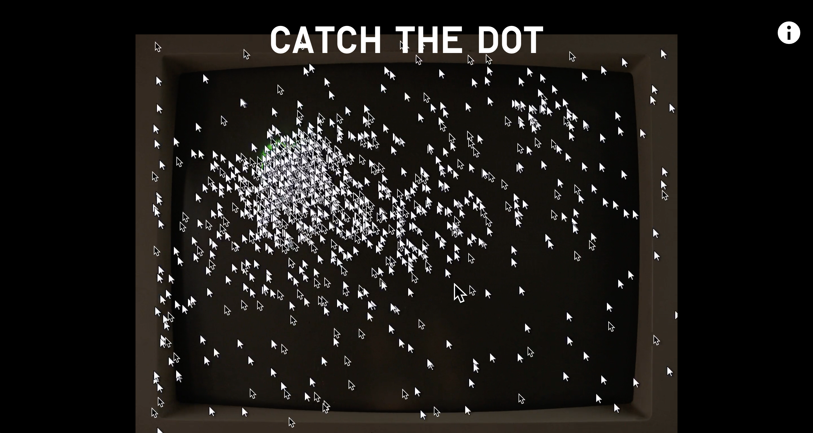
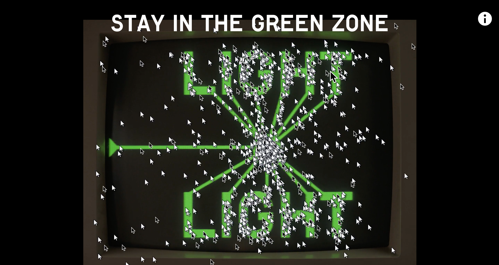
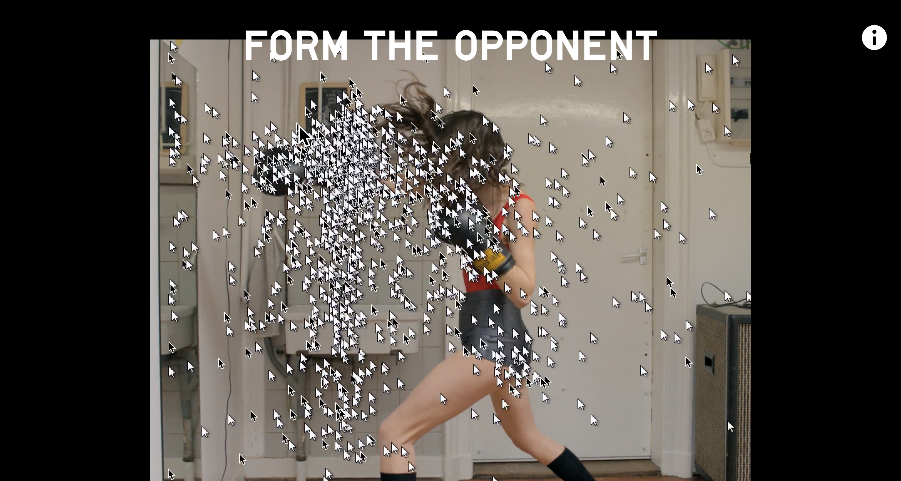
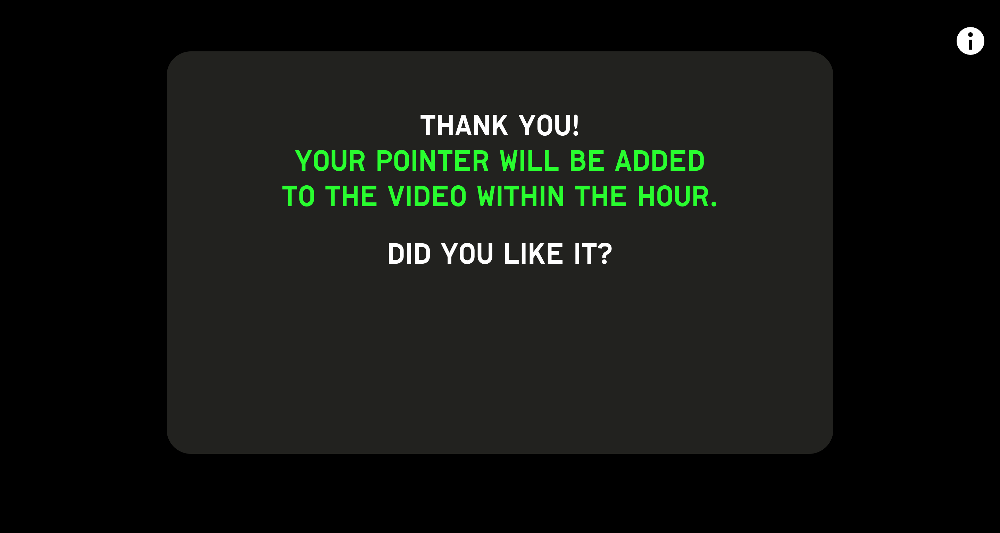
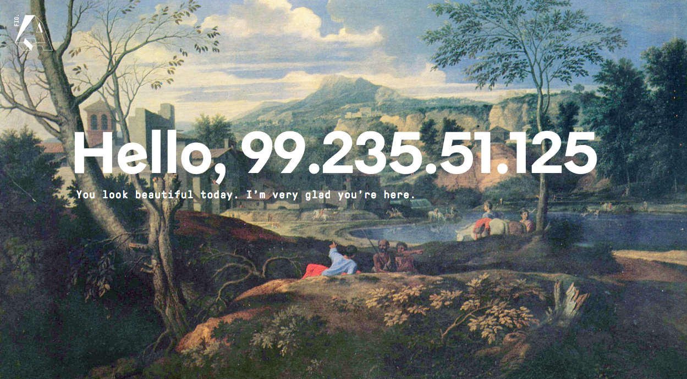
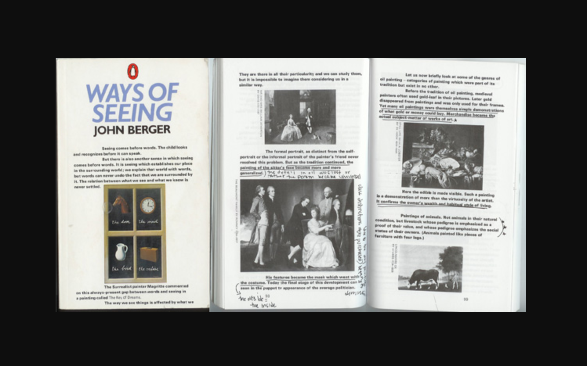

Design Brief
Ways of Seeing
John Berger
“Ways of Seeing”
“Seeing comes before words. The child looks and recognizes before it can speak. But there is also another sense in which seeing comes before words. It is seeing which establishes our place in the surrounding world; we explain that world with words, but words can never undo the fact that we are surrounded by it. The relation between what we see and what we know is never settled.”
Problem Statement
I’ve always been interested in how people interpret, or rather, “see” differently and how meaning has changed with the passage of time and is distinct from different and unique perspectives. Jamie suggested that I look at “Ways of Seeing” by John Berger which outlines how people see and why we should be critical and question the nature of our seeing. I decided to approach this from a theoretical perspective. How can I communicate the theories of “Ways of Seeing” through interactive design?
Problem Description
John Berger formats his television series in four episodes that focus on different ways of seeing and his book outlines these same theories, but is read in seven chapters. The essays are meant to be read in any order with four using a mixture of words and images, and the other three using only images. The entire goal of both the television series and the book is create a process of questioning. The viewer and reader should now question how they see things and wonder why they see things as they are.
— The first episode and the first chapter of the book outline the impact of photography, deconstructing the value of the original seen in oil paintings and its value in the age where it is possible to replicate and reproduce, especially in the era of photography. In the world of oil painting, it was what the painter decided what to depict and the viewer is transported in the vision of painter. Everyone also has different perspectives from each other based on their unique experiences. With the possibility of mass production and availability, the context of these works also change its meaning. Initially in large architectural settings like churches, paintings can now be seen in the context and luxury of one’s home — and the objects and environment that surrounds it ultimately distorts the original meaning. Reproduction also changes value of both the original and those created from the original. It validates the value and prestige of the original and dismisses the appropriated pieces as less valuable and of less cost. The meaning of the prior image is also distorted with panning of video, cropping of details, and the accompaniment of text and audio. With these additions, the meaning of the original image can completely change as a result. Berger also discusses the importance of sequencing — what is displayed before, after, or beside the image. Whatever the user sees before, after, or beside can affect the original meaning of the image and affect their way of seeing in almost a subconscious way.
— The second episode and third chapter of the book discuss the way we see the woman — both from the male perspective and the female one. Both oil paintings of the past and current media’s depiction of the woman formats her to be for the sight of man. Berger explores discussion of nudity versus nakedness and the difference between the two. His discussion explores both the male and female gaze and explores the relationship between the male spectator and the female held on display.
— The third episode and the fifth chapter of the book explores painting as a celebration of private possessions, ultimately questioning the value we place on that tradition. Oil painting was the primary medium because of its special ability to render the tangible — it can suggest its colour, texture, and temperature. What is a most visual sensation, then becomes a tactile sensation through the understanding of textures and materials in relation to one’s own experience. Objects within the image itself would connote a sense of meaning and context to objects in relation to it (i.e. the history of the object).
— The fourth episode and seventh chapter of the book analyses images of advertising and publicity in relation to oil painting in moods, relationships, and poses. Berger explores the spectator-seller relationship and how the image displayed in advertisements is the spectator’s envied version of him or herself. The spectator looks at product as transformable in achieving the life desired. Both photography in advertisements and oil painting were mediums that rendered the object more realistically so the spectator could feel that he can almost touch and possess the actual thing. It essentially deals with the realm of daydreams rather than reality itself.
— The in-between chapters: second, fourth, and sixth show only images where the reader can use their own judgements to understand their way of seeing.
Ultimately, there are infinite meanings in what we see. And people are the ones who create these meanings.
Needs of the Project
— The project would need be able to tell a story, but through a more unconventional narrative. Berger mentions that the book is to be read in any which matter, and I believe an interactive version of this theory could possibly structure it in his original means of display. The methods of seeing should still be deconstructed in the four different ways Berger mentions in both his television series and book. A series of mini interactions should be created so the viewer understands the key points of Berger’s argument.
— I believe a collaborative approach would be the most effective in optimizing the theory for a digital and interactive space. By seeing others’ “Ways of Seeing” I believe understanding of the theory and how vast we interpret and communicate messages visually would be understood in a more interesting and large-scale manner. It would expand the mind even further, seeing others interpretations of the same manner.
— I believe that the theory could also expand to the era of the digital age. How does interaction and digital design affect the meaning of the message?
Goals
— The project should ultimately leave the viewer to question the way they see things and why they see them in such a manner. They should be skeptical of this theory as well.
— The project must differentiate it from the prior mediums of book and television. The project’s strength lies in its ability to interact and explore. We are now in an era of mass communication and information being sent to us in short quick dosages.
— The project should explore how the invention of interactive technology such as the smart phone and computer have also distorted the way we see things and how communication has ultimately been affected. The interface should question the medium itself and how I am communicating “Ways of Seeing” through interactive design.
Deliverables
The project will be an interactive web piece. If I have enough time, I would like to develop an interactive mobile piece as well that is specifically geared to the medium. Since the smart phone is another medium and another way that has affected our way of seeing things, I believe it would need a more separate, unique experience from that of its computer counterpart. I also think it would be interesting to create an interactive installation because Berger talks about how painting and the meaning of the object is static as it’s situate in a single space and time.
I would love to have it fully interactive on an actual site since the content generated depends on users input and their interaction that contributes to the multiplicity of “ways of seeing”. My coding abilities, unfortunately, are not up to par with my vision, so I will probably create an interactive prototype with Principle and a video to demonstrate the experience.
Constraints
— Ideally, I would create a web piece and invite users to partake and develop their own “ways of seeing”, but I have limited coding knowledge and skills, so it will be difficult.
— Some interactions I’m not sure if I can replicate in Principle, so I may have to use AfterEffects or through video to simulate the experience better.
— Time may be an issue since I’ve started this project so late. (Sorry, Jamie, I’m the worst 😢) I hope to develop many collaborative mini interactions to communicate each theory. I’m hoping to be able to make all four episodes and seven chapters of “Ways of Seeing” interactive, but I hope to at least dive into the first chapter.
— The site is most optimized if many users participate in it so that the site can ultimately document many “ways of seeing”. I believe the message of the theory can still be communicated, but to a lesser extent with less participants.
Competitive Analysis 01
Do Not Touch — Studio Moniker
What is it?
An interactive, crowd sourced music video site for the track Kilo by the band Light Light that celebrates the 50th anniversary of the computer pointer.
Landing
Interaction 1
Interaction 2
Ending
Who uses it?
Fans of the band or random people on the internet who found this by chance.
Why do they use it?
Even if you aren't a fan of the band, the site is fun and interesting to use. It involves a collaborative and participatory approach where users follow the directions on screen and work together. It's interesting to use the mouse to interact — it almost acts like a game.
In what context?
The site was created for the band, Light Light, for their track, Kilo. The site also serves to commemorate the mouse cursor's 50th anniversary. The site is best viewed on a computer or laptop since its theme revolves around the mouse cursor itself which is basically the star of the whole site.
Visual Design
The design and aesthetic of the site of itself is almost barebones and has a little grit. Since the focus is on the interactions and what the user is interacting with, the format is quite minimal and typography is a simple uppercase sans serif. The visual content consists of video content which works with the user's motion of the cursor. The aesthetic is kind of old-school — for example, it starts off with a cropped screen of an old computer monitor — but it works since the site is meant to commemorate the history of the cursor.
Interaction
The site was very effective in creating a fun, collaborative piece that both gets the audience interested in the band its promoting for and commemorates the 50th anniversary of the mouse cursor. Although users aren't interacting at the same time, they feel as though they are collaborating and working together with strangers in real time because of the screen-recording of previous participants. The different interaction are fun and unique from each other and the instructions for each are very concise and clear.
Competitive Analysis 02
Figure A.: Examining Hypermedia — Angelina Thjung
What is it?
A mobile site that explores potential of mobile user interaction by constructing and deconstructing mediums found throughout Western history.
Landing
Mobile (End Screens)
Who uses it?
People randomly exploring the interwebs 🕸.
Why do they use it?
It initially comes off as a mysterious site that compels the viewer to interact and play around with it. As the user continues to interact with it, a narrative begins to develop with the rise and fall of different technologies.
In what context?
The site was created to understand the construction and deconstruction of different mediums found in Western history. The site explores three areas in three tableaux: Renaissance Painting and the invention of Perspective, Photography and the Moving Image, and Digital Applications and User Interaction.
Visual Design
The visual elements used are specific to the tableaux being presented. Each section is relevant to the aesthetic of its time and the medium being spoken of. The consistency across tableaux is seen with the monospace typography and consistency in tones.
Interaction
The site optimizes many different and unique mobile interactions to convey a story. The user ultimately feels like they are "uncovering" a mystery with each interaction and discovery of interaction. There is no manual or directions to tell the user exactly what to do (i.e. touch this button), but by the user playing around they can ultimately discover and figure out the intended interactions in each section. I think this project is a good example of how to utilize the medium and interactive elements as a form of storytelling. I liked the mysterious elements of the work which I feel works with Berger's theories of question, understanding, and uncovering the different ways of seeing.
Competitive Analysis 03
Ways of Seeing (television series and book) — John Berger
What is it?
Although not an interactive piece, the interactive version of "Ways of Seeing" that I am trying to develop should differentiate itself from its television and book brethren. The two types of media adds to the arguments Berger makes and he uses both to expand the meaning of his message.
Book
Episode 1
Who uses it?
Often used in art education to expand visual artists and designers perception of what they see.
Why do they use it?
The theory challenges these creators when understanding how people see the images they produce and what affects their way of seeing.
In what context?
The episodes and every chapter in the book mostly talks about European painting and its historical significance in its way of shaping how we see. Berger released the series in 1972 and the book was written shortly after. The time period affected the material covered such as: emergence of new technologies, the female identity, and the prominence of media and publicity.
Visual Design
The visual style is specific to the time period. This is evident in the episodes with the quality of the filmography in both the audio and video, the fashion, and some of the material discussed. Even the book has a retro look with the off-white coloured paper, the faded/muted and grainy images, and the sans-serif type that looks slightly extended. These are visual elements to keep in mind when creating the interactive version of Berger's theory.
Interaction
The episodes and book are not interactive pieces, but the way Berger formats the theory to each medium is evident. The episodes use video and audio effectively to demonstrate how the medium shapes our way of seeing — like in the sequencing section of the first episode. The book also uses its medium to communicate the theory differently from the episodes. There are 7 chapters in the book, but 4 have a mixture of both text and image, and 3 have just images. The sections with just images allow breaks in between chapters for the viewer to judge and understand their own way of seeing. Berger also states that the book can be read in any so manner and the content within should be continuously questioned by its reader.
User Scenario
Scenario 1
Mary is a student in the visual arts who was exposed to Ways of Seeing in class. She stumbles on this site per recommendation of a professor. She picks a section at random and begins to interact with the site. The site presents her many different mini interactions and each time, Mary's mind is expanded. With each mini interaction, she can also see other user's creations which represent their "way of seeing". Mary begins to understand the material covered in Berger's episode better and learns to critically judge the ways she sees things and also the way people may see whatever she creates in the future.
User Scenario
Scenario 2
Linda has no prior creative education and randomly stumbles on this site. She randomly explores a section and begins to interact. She creates content and is able to see other participants' content. She finds it interesting how there are so many different things created from a single object and this expands her mind on how people interpret differently. The interactions on the site piqued her interest, and she would now like to explore Berger's episode series and book to understand the theory further. Linda's mind is now expanded and she now starts to think more critically of how she see things and how people may be trying to make her see things, especially in media and advertisements that target her as a consumer.
Flowchart
Site Structure
The following flowchart demonstrates the structure of the site. I deconstructed the narrative demonstrated in both the episodes and the book. The site will intially start with the table of contents where the viewer can interact with any episode/chapter in any sequence. From the initial page, the reader may also learn about the intentions of the site in the about page.
Each of the following episodes contain series of mini interactions that demonstrate the different ways of seeing. Following each viewer's interaction and completion of the interaction, comes a gallery/collection of what other users who have accessed and interacted with the site also created.
Episode 1/Chapter 1 encompasses methods of seeing such as: perspective, context, reproduction, cropping, text & audio, and sequencing. Each section involves mini interactions that correspond to each way of seeing.
Episode 2/Chapter 3 encompasses methods of seeing regarding gender and female identity. I plan on splitting the perspectives so the viewer can understand being the male spectator, viewing the female, and being the female on display and under the male gaze. The viewer should gain an understanding of being judged and judging, and understand idealization and identity as a result.
Episode 3/Chapter 5 looks at oil painting more deeply and its setting in time. Images in the first section should be used to generate a feeling of tactility and life to the viewer. The viewer should also understand the significance of symbolism with the combination of accompanied objects whether it be architectural, agriculture, or historical.
Episode 4/Chapter 7 deals with advertisement and publicity. The viewer should be presented with the feeling of desire and feeling of possessing what was desired. The advertisements presented should also generate the disconnect between the viewer's current self and their idealized self with the help of advertisement, publicity, and objects of material value.
Chapters 2, 4, and 6 in the book are sections of just images prior to the topic of relevant discussion. I believe these breaks should be put at random in the sequence of the narrative, and the viewer should be able to apply any of the interactions that change their way of seeing to the corresponding image given.
Wireframes
Low-Fidelity Wireframes